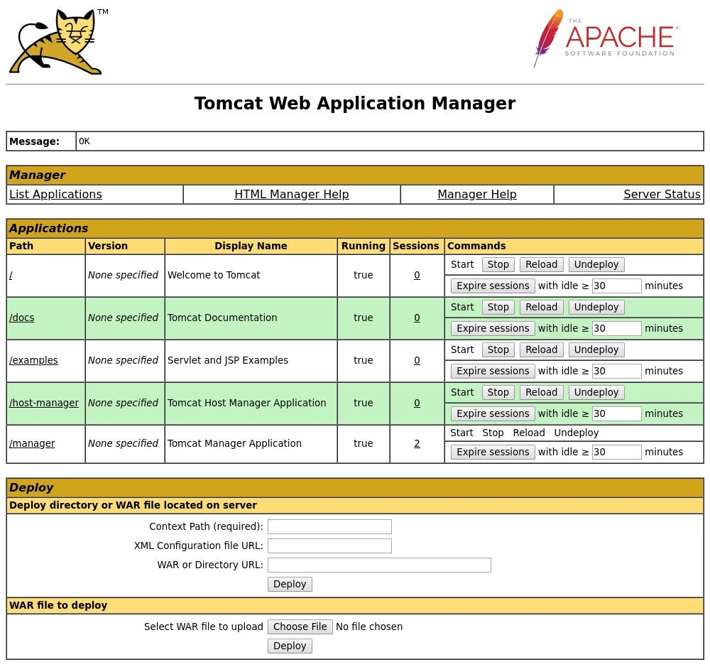
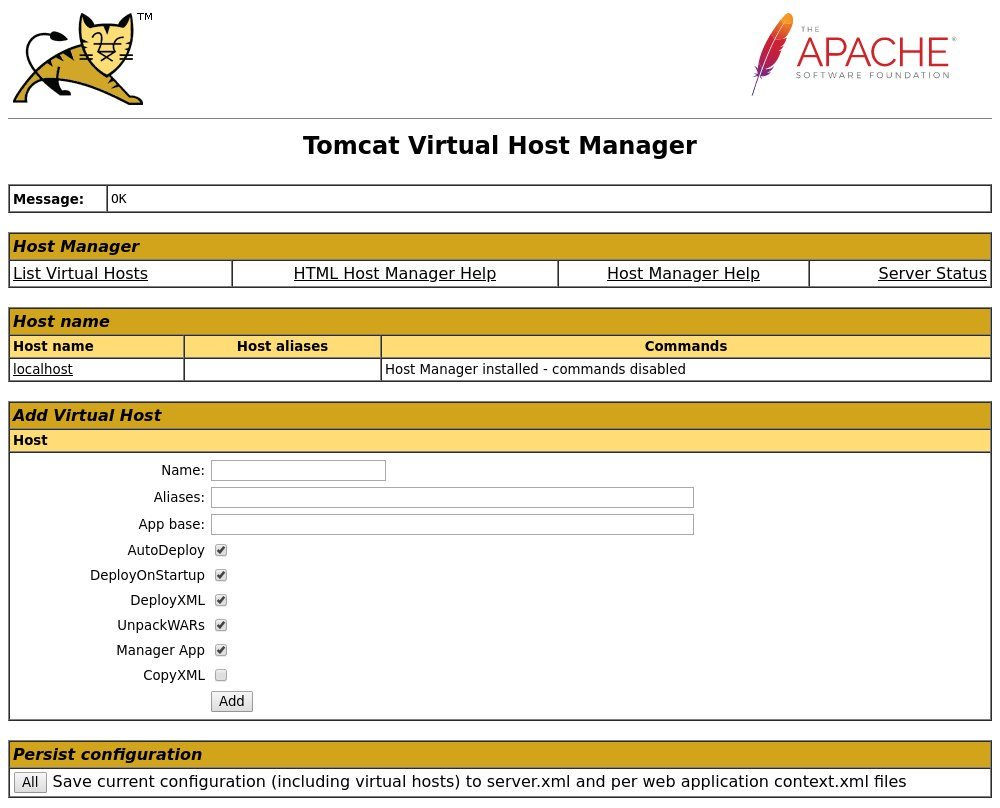

如何在 Debian 10 Linux 上安装 Tomcat 9
Apache Tomcat 是基于 Java 的开源应用程序服务器，可实现 Java Servlet ， JavaServer Pages ， Java Expression Language 和 Java WebSocket 技术。它是当今世界上使用最广泛的应用程序和 Web 服务器之一。
本教程说明了如何在 Debian 10 Buster 上安装 Apache Tomcat 9.0 以及配置 Tomcat Web 管理界面。
先决条件
这些说明假定您以 root 用户或具有 sudo 特权的用户身份登录。
安装 OpenJDK
Tomcat 9.0 要求在服务器上安装 Java SE 8 或更高版本。
执行以下命令以安装 OpenJDK 软件包：
sudo apt install default-jdk
创建 Tomcat 用户
以 root 用户身份运行 Tomcat 存在安全风险，因此不建议这样做。我们将创建一个新用户，该用户将用于运行 Tomcat 服务。
运行以下命令创建新的系统用户和组并使用 /opt/tomcat 作为用户主目录：
sudo useradd -m -U -d /opt/tomcat -s /bin/false tomcat
下载 Tomcat
在撰写本文时，最新的 Tomcat 版本是 9.0.27 。在继续下一步之前，您应该到 Tomcat 9 下载页面检查是否有较新的版本。
转到 /tmp 目录并下载最新的 Tomcat 二进制发行版：
cd /tmp
wget https://www-eu.apache.org/dist/tomcat/tomcat-9/v9.0.27/bin/apache-tomcat-9.0.27.tar.gz
下载完成后，解压缩压缩文件：
tar -xf apache-tomcat-9.0.27.tar.gz
将 Tomcat 源文件移至该 /opt/tomcat 目录：
sudo mv apache-tomcat-9.0.27 /opt/tomcat/
Tomcat 9 会定期更新。为了更好的控制版本和更新，创建符号链接 latest 指向 Tomcat 的安装目录：
sudo ln -s /opt/tomcat/apache-tomcat-9.0.27 /opt/tomcat/latest
稍后在升级 Tomcat 时，只需解压缩较新的版本并更改符号链接以指向最新版本即可。
将 /opt/tomcat 目录的所有权更改为 tomcat 用户和组，以便用户可以访问安装目录：
sudo chown -R tomcat: /opt/tomcat
使 bin 目录内的脚本可执行：
sudo sh -c 'chmod +x /opt/tomcat/latest/bin/*.sh'
创建 SystemD 单位文件
打开您的文本编辑器并创建一个新文件 tomcat.service ，其名称如下：
sudo nano /etc/systemd/system/tomcat.service
/etc/systemd/system/tomcat.service
[Unit]
Description=Tomcat 9.0 servlet container
After=network.target
[Service]
Type=forking
User=tomcat
Group=tomcat
Environment="JAVA_HOME=/usr/lib/jvm/default-java"
Environment="JAVA_OPTS=-Djava.security.egd=file:///dev/urandom"
Environment="CATALINA_BASE=/opt/tomcat/latest"
Environment="CATALINA_HOME=/opt/tomcat/latest"
Environment="CATALINA_PID=/opt/tomcat/latest/temp/tomcat.pid"
Environment="CATALINA_OPTS=-Xms512M -Xmx1024M -server -XX:+UseParallelGC"
ExecStart=/opt/tomcat/latest/bin/startup.sh
ExecStop=/opt/tomcat/latest/bin/shutdown.sh
[Install]
WantedBy=multi-user.target
通过键入以下内容通知 systemd 一个新的单元文件存在并启动 Tomcat 服务：
sudo systemctl daemon-reload
sudo systemctl start tomcat
通过输入以下命令检查 Tomcat 服务的状态：
sudo systemctl status tomcat
● tomcat.service - Tomcat 9.0 servlet container
Loaded: loaded (/etc/systemd/system/tomcat.service; disabled; vendor preset:
Active: active (running) since Sat 2019-11-09 13:53:51 PST; 5s ago
Process: 5752 ExecStart=/opt/tomcat/latest/bin/startup.sh (code=exited, status
Main PID: 5759 (java)
如果没有错误，设置 Tomcat 服务随机启动：
sudo systemctl enable tomcat
您可以像操作其他任何 systemd 单元服务一样启动，停止和重新启动 Tomcat ：
sudo systemctl start tomcat
sudo systemctl stop tomcat
sudo systemctl restart tomcat
调整防火墙
如果您的 Debian 系统上运行着防火墙并且想从本地网络外部访问 tomcat 界面，则需要打开以下端口 8080 ：
sudo ufw allow 8080/tcp
在生产环境中运行 Tomcat 应用程序时，很可能您将拥有一个负载平衡器或反向代理，并且最佳做法是将对端口 8080 的访问限制为仅对内部网络的访问。
配置 Tomcat Web 管理界面
现在已经安装了 Tomcat ，下一步就是创建一个可以访问 Web 管理界面的用户。
Tomcat 用户及其角色在 tomcat-users.xml 文件中定义。如果打开文件，您会注意到该文件中充满了注释和描述如何配置文件的示例：
sudo nano /opt/tomcat/latest/conf/tomcat-users.xml
我们将在 /opt/tomcat/latest/conf/tomcat-users.xml 文件中定义新用户，如下所示。用户将有权访问 tomcat Web 界面 (manager-gui 和 admin-gui) ：
<tomcat-users>
<!--
Comments
-->
<role rolename="admin-gui"/>
<role rolename="manager-gui"/>
<user username="admin" password="admin_password" roles="admin-gui,manager-gui"/>
</tomcat-users>
默认情况下， Tomcat Web 管理界面仅允许从本地主机访问。如果要从远程 IP 或从任何地方访问 Web 界面，则可以打开以下文件并进行以下更改。
如果您需要从任何地方访问 Web 界面，请打开以下文件并注释或删除行：
文件 /opt/tomcat/latest/webapps/manager/META-INF/context.xml
<Context antiResourceLocking="false" privileged="true" >
<!--
<Valve className="org.apache.catalina.valves.RemoteAddrValve"
allow="127\.\d+\.\d+\.\d+|::1|0:0:0:0:0:0:0:1" />
-->
</Context>
文件 /opt/tomcat/latest/webapps/host-manager/META-INF/context.xml
<Context antiResourceLocking="false" privileged="true" >
<!--
<Valve className="org.apache.catalina.valves.RemoteAddrValve"
allow="127\.\d+\.\d+\.\d+|::1|0:0:0:0:0:0:0:1" />
-->
</Context>
如果您只需要从特定 IP 访问 Web 界面，则无需注释这些块，而是将您的公共 IP 添加到列表中。假设您的公用 IP 是 32.32.32.32 并且您只想允许从该 IP 访问：
文件 /opt/tomcat/latest/webapps/manager/META-INF/context.xml
<Context antiResourceLocking="false" privileged="true" >
<Valve className="org.apache.catalina.valves.RemoteAddrValve"
allow="127\.\d+\.\d+\.\d+|::1|0:0:0:0:0:0:0:1|32.32.32.32" />
</Context>
文件 /opt/tomcat/latest/webapps/host-manager/META-INF/context.xml
<Context antiResourceLocking="false" privileged="true" >
<Valve className="org.apache.catalina.valves.RemoteAddrValve"
allow="127\.\d+\.\d+\.\d+|::1|0:0:0:0:0:0:0:1|32.32.32.32" />
</Context>
允许的 IP 地址列表是用竖线 | 分隔的列表。您可以添加单个 IP 地址或使用正则表达式。
重新启动 Tomcat 服务以使更改生效：
sudo systemctl restart tomcat
测试安装
打开浏览器并输入： http://<your_domain_or_IP_address>:8080
如果安装成功，将显示类似于以下内容的屏幕：

可以使用 Tomcat Web 应用程序管理器仪表板 http://<your_domain_or_IP_address>:8080/manager/html 。从这里，您可以部署，取消部署，启动，停止和重新加载应用程序。

Tomcat 虚拟主机管理器仪表板位于 http://<your_domain_or_IP_address>:8080/host-manager/html 。在这里，您可以创建，删除和管理 Tomcat 虚拟主机。

结论
您已在 Debian 10 系统上成功安装了 Tomcat 9.0，如果需要，您可以访问官方的 Apache Tomcat 9.0 文档并了解有关 Apache Tomcat 功能的更多信息。